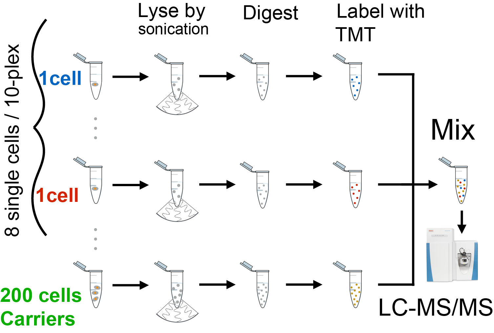

Supporting Information
Single Cell ProtEomics by Mass Spectrometry: SCoPE-MS, SCoPE2
Peer-reviewed Articles
SCoPE-MS
DART-ID
Perspective
Review
Preprints Single-cell MS SCoPE-MS SCoPE2 DART-ID mPOP
Data Webs SCoPE-MS SCoPE2 DART-ID DO-MS mPOP
Highlights Genome Web Proteomics News Front Line Genomics
CSHL Talk In Depth Feature
Data SCoPE, MassIVE
Blogs SCoPE-MS blog Single-cell analysis
Preprints Single-cell MS SCoPE-MS SCoPE2 DART-ID mPOP
Data Webs SCoPE-MS SCoPE2 DART-ID DO-MS mPOP
Highlights Genome Web Proteomics News Front Line Genomics
CSHL Talk In Depth Feature
Data SCoPE, MassIVE
Blogs SCoPE-MS blog Single-cell analysis
Summary
Cellular heterogeneity is important to biological processes, including cancer and development. However, proteome heterogeneity is largely unexplored because of the limitations of existing methods for quantifying protein levels in single cells. To alleviate these limitations, we developed Single Cell ProtEomics by Mass Spectrometry (SCoPE-MS), and validated its ability to identify distinct human cancer cell types based on their proteomes. We used SCoPE-MS to quantify over a thousand proteins in differentiating mouse embryonic stem (ES) cells. The single-cell proteomes enabled us to deconstruct cell populations and infer protein abundance relationships. Comparison between single-cell proteomes and transcriptomes indicated coordinated mRNA and protein covariation. Yet many genes exhibited functionally concerted and distinct regulatory patterns at the mRNA and the protein levels, suggesting that post-transcriptional regulatory mechanisms contribute to proteome remodeling during lineage specification, especially for developmental genes. SCoPE-MS is broadly applicable to measuring proteome configurations of single cells and linking them to functional phenotypes, such as cell type and differentiation potentials.
Budnik B., Levy E., Harmange G., Slavov N.✉ (2018)
SCoPE-MS: mass-spectrometry of single mammalian cells quantifies proteome heterogeneity during cell differentiation
Genome Biology 19:161 preprint | PDF | SCoPE-MS Q & A | SCoPE-MS @ Twitter RAW Data @ MassIVE | RAW Data @ ProteomeXchange | CSHL Talk

Single Cell ProtEomics by Mass Spectrometry (SCoPE-MS)
What was rate limiting was the idea - not the technology